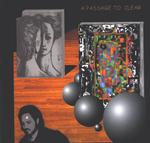

| Artist: | John Miner's Art Rock Circus |
| Title: | A Passage To Clear |
| Label: | Tributary catnr unknown |
| Length(s): | 43 minutes |
| Year(s) of release: | 2000 |
| Month of review: | [01/2002] |
| 1) | Stranger Of My Find | 4.10 |
| 2) | The Promise | 3.02 |
| 3) | Underground | 4.58 |
| A) Perceive, Transform, Release | ||
| B) A Passage To Clear (instrumental) | ||
| 4) | Clear | 3.19 |
| 5) | Love | 3.14 |
| 6) | Shadows Of Style | 2.04 |
| 7) | Goodbye The Lie | 4.18 |
| 8) | Strange | 3.50 |
| 9) | Poetic Injustice | 1.58 |
| 10) | Heaven | 4.41 |
| 11) | Cosmic Cobwebs And Lollipops | 3.05 |
| 12) | Alone | 2.50 |
| 13) | Stranger Of My Find (reprise) | 1.57 |
... The Promise. The start of this track isn't as much off key as the previous, but its vengeance is significant. The reference to Finneus Gauge remains present.
Underground has a bit of a triphop rhythm on the one hand, but the way the saxophone is used is like you would expect in a Mike Hammer bar. A husky male male voice leads us into an instrumental part which sounds very sketchy, towards the end moving rather abruptly over into...
... Clear. According to the liner notes we have switched vocalists now to Karyn Anderson, but I find that her voice sounds a lot like Karen Renee's where it doesn't on the other tracks.
Love starts off with an organ sound that almost reminds of the circus, or American ice hockey matches. Luckily this reference quickly dwindles, unfortunately though, it moves off into a sixties love, peace and happiness feel. Not exactly a winner, especially since the sketchiness in this song is pretty bad.
Shadows Of Style features Anderson once again, sounding an uncomfortable lot like Karen Carpenter, and a composition threatening to trail off into that direction as well. As you might expect, this gives the song a feel pretty different from the previous stuff. Luckily the track is pretty short, so that it doesn't do too much harm.
Goodbye The Lie shows the Carpenter voice once again, but fortunately the composition is a lot less of topic, making it a pretty good track, although more of a melodic type than most others.
Strange brings back that Finneus Gauge feeling. Renee's trying to convince us how strange her ways are. I believe her. Once again a nice one.
Poetic injustice shows off key guitaring (maybe slightly wobbly) with a haunted narrative reminding me somewhat of the spooky voice Twelfth Night's Geoff Mann used in particularly The Freak Show. It develops into a building wall of guitar sound topped by female chanting of unknown origin (since neither female vocalist is credited). Maybe John has something he wants to tell us about.
Heaven features a pretty straight vocal line, accompanied by a wandering guitar line and some show band drumming. Well, not as bad as that, really, it's pretty good. The track moves onto ...
... Cosmic Cobwebs And Lollipops (quite), which starts off in the same vein, but all of sudden changes into a semi turmoil of interesting and not so interesting experimental vocalizations. I'm not quite sure what the point of this track is.
Alone is a track that sounds like the kind of track whole bunches of people are singing along with towards the end, after some eight minutes of repetition. I have the feeling there is something about it I know, but have no idea what. This track has more of a pop(rock) feel.
Stranger Of My Find (reprise), of course, once again has that Finneus Gauge feel, and is exactly what the title would suggest it to be.
If you like your music to sound crisp and clear, a wonder of technique and souplesse, don't get this album. However, if you fancy a bit of an experiment, and don't always look for the melodic way out, you should check out this disc. But do remember the sound quality (or lack thereof).